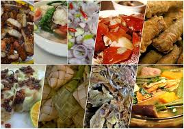

Aside from its historical sites, Cebu is also famous for its delicious local delicacies. Here are some must-try dishes:

These delicacies are a reflection of Cebu’s rich culinary heritage and are sure to delight anyone who visits.
Home Page